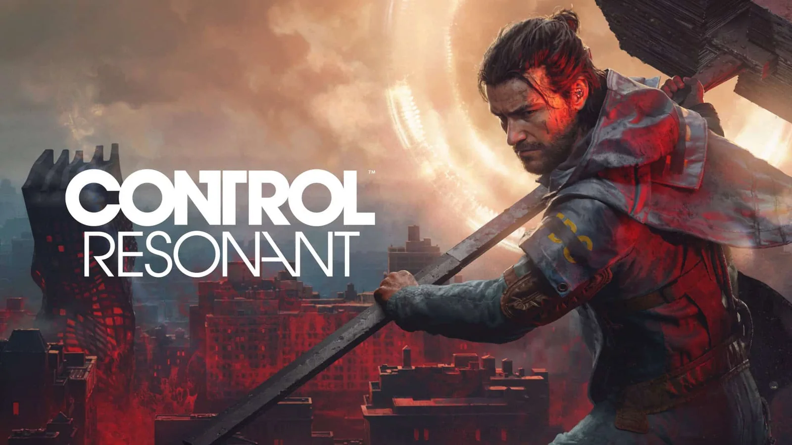

《控制：共振》：把主角换掉之后，反而更像 Remedy 了

《控制：共振》九月底发售了。它是 2019 年那部《控制》的正统续作，但 Remedy 做了个不太常规的决定——把主角换了。
前作的主角杰西·法登这次只在背景里存在：她下落不明。镜头交给她的弟弟，迪伦。
「一个被关了七年的人，走出门发现世界已经烂透了。」
先说一下前作
2019 年的《控制》，舞台是联邦控制局（FBC）的总部「太古屋」——一栋内部无限延伸、空间规则随时会变的建筑。杰西为了找失踪的弟弟闯进去，莫名其妙成了新任局长，顺带收拾了一场由异界实体「希斯」引发的烂摊子。
那部游戏的气质很特别：粗野主义建筑、超自然档案、办公室政治，再加上 Remedy 一贯的怪。它拿了当年的多个年度游戏提名，也成了 Remedy 最有辨识度的作品之一。
七年之后，烂摊子更大了
《共振》的故事发生在七年之后。封锁希斯的行动失败，它泄露到了外面的世界，在所到之处引发一种叫「格式化」的现象——建筑被随机重组、物体成倍增殖，整座城市变成一个物理规则失效的迷宫。
这次的地图是曼哈顿。不是前作那种封闭的大楼，而是开阔的街道、屋顶，以及向内折叠的街区。这个变化不只是场景更大，它直接改变了玩法。
迪伦：和前作主角完全相反的一个人
迪伦在前作里是「6 号实验体」——从小被 FBC 当研究对象关着，后来被希斯控制，第一天就杀了五百多人。杰西打败希斯之后，他陷入昏迷。
这一作他醒了。昏迷了七年，醒来时姐姐不见了，而全世界都记得他干过什么。
他的性格和杰西几乎是反的：杰西果断、主动、一路向前；迪伦犹豫、害羞、不太会和人打交道。游戏里一部分对话可以替他做选择，这些选择会塑造他性格的走向。
搭档是 FBC 派来对接他的特工佐伊。一个做事不计后果，一个敷衍了事，两人的互动是这作比较有意思的部分。
玩起来变了多少
- 机动性：二段跳之后按住跳跃还能继续升空，闪避变成空中冲刺，连按两次会拖出残影。后期能解锁抓钩，探索时相当好用。
- 武器：迪伦的装备叫「异变者」，能把体内的能量转成武器并切换形态——双手锤、双刀等等，不再是前作那种「枪 + 超能力」的组合。
- 叙事：除了主线，还有一些可选小任务，用场景里的物件重现记忆或童年片段。比如救下两只不会动的猫，替迪伦摆出他画过的猫咪野餐场景。
- 档案：系列传统，很多背景要靠主动翻档案拼出来，不会直接喂给你。
谁做的
- 开发：Remedy Entertainment（芬兰，《心灵杀手》《控制》）
- 创意总监：Sam Lake（本名 Sami Järvi）
- 游戏总监：Mikael Kasurinen
- 剧本：Ashley Smith
- 发售：2026 年 9 月 24 日，PS5 / Xbox Series X|S / PC
技术上是这代比较激进的一个：支持路径追踪，光影在扭曲空间里的表现是卖点之一；PC 版支持 DLSS 4.5。
值不值得入
玩过前作的话，这作基本是必看的——不是因为它「更大」，而是因为它用一个完全不同的视角重新看那个世界。杰西是闯进去的外来者，迪伦是从里面被放出来的囚徒，两个人的处境差得很远。
没玩过前作也能进，游戏准备了一段回顾短片。但要有心理准备：故事信息量很大，一开始会被砸得有点懵。
如果冲着「Remedy 式怪」来的，这作没让人失望。街区虽然开了，但那种「所有东西都不对劲」的不安感一直还在。
题图来自官方主视觉，版权归 Remedy Entertainment 所有。